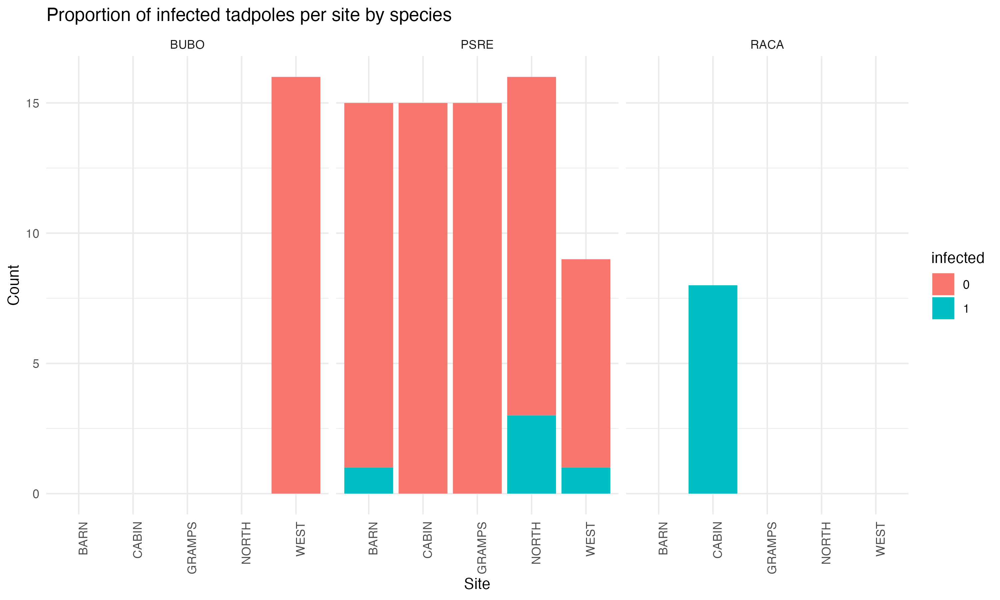

Tadpoles as a vector of Batrachochytrium dendrobatidis (Bd)
In this analysis, I begin to explore Bd infection in tadpoles
Author
Hope Hahn
Published
December 14, 2023
Introduction
The chytrid fungus Batrachochytrium dendrobatidis (Bd) has been known to cause Chytridiomycosis, a lethal infection causing mass declines in amphibians globally (Berger et al. 1998, Skerratt et al. 2007). The zoospores are waterborne and infect keratin in frog skin and tadpole mouthparts, which causes sloughing, thickening, and erosions of skin in post metamorphic amphibians (Berger et al. 1998, Berger et al. 1999). Bd infection is not considered lethal in tadpoles, which can harbor the disease for months (Berget et al. 1999). While there have been many studies conducted on the implications of infection in post-metamorphic amphibians, we are lacking in understanding of the role of tadpoles as reservoirs and vectors of Bd. In this analysis, I aim to begin to explore the relationship between Bd and tadpoles from the East Bay in California. Given the scope and size of my data, my question is whether the species and Gosner stage1 of larval amphibians can predict the probability of their infection.
Data
The data was collected by the Briggs Lab from the Department of Ecology, Evolution, and Marine Biology at the University of California, Santa Barbara. The full data included tadpole ID, swab ID, date collected, species, Gosner stage, site, zoospore load, PCR results, notes in individual tadpoles, and site attributes (observations, water clarity, temperature, pH, etc).
Data collection
In June 2023, ninety-four tadpoles were collected and swabbed across five ponds at Blue Oak Ranch Reserve, which one of the reserves part of the UC Natural Reserve System. At each site, we attempted to catch fifteen tadpoles of each species present. We were able to sample three species: Bufo boreas (BUBO), Pseudacris regilla (PSRE), and Rana catesbeiana (RACA). Each Tadpole was swabbed around the mouth and Gosner stage was determined using a guide. In the lab, DNA was extracted from each swab, and qPCR was carried out to determine infection and zoospore loads.
Analysis
Tidy Data
The first step of the analysis was to read in the data, select for the variables used for the analysis, and combine into one dataframe. The PCR results and field notes were in separate files, so I read in both files and dropped columns of variables that were not necessary for this analysis. I then combined both of the dataframes into a single dataset which included the variables tadpole ID, swab ID, site, species, infection status, zoospore load, and Gosner stage. Tadpoles 46 and 51 had high Gosner stages, meaning that their limbs were almost completely developed, so those individuals were swabbed in two ways: one around the mouth and one on their feet, legs, and sides2. Due to this, tadpoles 46 and 51 have two observations in the dataframe, so I dropped the swab IDs 46B and 51B, which were the feet, legs, and sides swabs. Swab IDs 46A and 51A, the mouth swabs, were kept to keep swabbing methods consistent among all observations. The resulting dataframe contained the necessary variables to continue with the analysis.
Code
# load in packageslibrary(tidyverse)library(broom)# tadpole swab data (pcr)tadswab <-read.csv("data/tadswab_data.csv") %>%select(-pcr_notes, -pcr_resultsfile, -date_collected, -pcr_inhibited, -pcr_qty, -pcr_ct, -pcr_ipc_ct) # this column is just full of NA# information about each tadpoletad_info <-read.csv("data/tad_info.csv") %>%select(-date_collected, -notes) # take out date collected to minimize final dataset# add tad info to tadswab datacomplete_tadpole <-left_join(tadswab, tad_info) %>%relocate(site, .after = swab_id) %>%relocate(spp, .after = site) %>%subset(swab_id !="tad_046_B") %>%subset(swab_id !="tad_051_B")# convert infected column to factor instead of numericcomplete_tadpole$infected <-as.factor(complete_tadpole$infected)
Logit Function
Code
ggplot(complete_tadpole) +geom_point(aes(x = stage_gs, y = infected, color = spp)) +theme_minimal() +scale_color_manual(values =c("BUBO"="pink2", "RACA"="cornflowerblue", "PSRE"="palegreen3")) +labs(title ="Infected status by Gosner stage", x ="Gosner stage", y ="Infected Status (binary)")

Figure 1: visualizing which individuals were infected based on Gosner stage by species
Infection status was determined by PCR and exists as a binary variable of 0 or 1, with a value of 1 indicating infection. I wanted to analyze infection as dependent variable, so it was necessary to run a logistic regression so we could understand infection status as a continuous variable. Using a logistic regression allowed me to see how probability of infection changed with a change in the explanatory variables. I decided to use a logit function to understand the how Gosner stage and species can act as a predictor of the probability of infection. Using the glm() function in R with the family argument assigned as “binomial”, I ran two separate logit functions: one with only Gosner stage as an explanatory variable, and the other with both Gosner stage and species as explanatory variables.
Code
# logit function - gosner stage and infectioninfection_glm <-glm(infected ~ stage_gs, data = complete_tadpole, family ="binomial")# logit function - gosner stage, species, and infectioninfection_glm2 <-glm(infected ~ stage_gs + spp, data = complete_tadpole, family ="binomial")#summary(infection_glm)#summary(infection_glm2)
Upon checking the outputs of each model, the Akaike Information Criterion (AIC) score shows that the model using both Gosner stage and species as explanatory variables is a better fit, so I decided to continue my analysis with this model. The AIC score for this model was 43.44, while the model using only Gosner stage as a predictor was 78.72.
I thought that the best way to understand the results of the logit function would be to calculate the predicted probabilities of infection in relation to Gosner stage. To do this, I used the logit function model to generate predicted probabilities using the augment function.
Code
# calculate predicted odds of second modelpredicted <- infection_glm2 %>%augment(type.predict ="response") %>%mutate(y_hat = .fitted)
T-test
Initially, I wanted to run a t-test (or ANOVA depending on number of infected species) to determine whether the mean zoospore loads were different among different species. However, given that only five PSREs and eight RACAs were infected out of the sample population, I decided that the t-test was not appropriate for this time. However, in any future sampling with a larger population of infected individuals, I would like to run a t-test/ANOVA to understand if zoospore loads differ across different species.
In the future, when running this t-test, I will define the null and alternative hypotheses. The null hypothesis would be that, among those with infection, there is no difference in mean zoospore load between different species; the alternative hypothesis would be that there is a difference in mean zoospore load between different species. After running the test, if the p-value is below a significance level of α = 0.05, then I will reject the null hypothesis that there is no difference in mean zoospore load between those infected of different species, but if the p-value is above the significance level, then I will fail to reject the null hypothesis.
Results
When looking at predicted probabilities of infection among species, it shows that RACAs have a 100% probability of being infected regardless of Gosner stage, while BUBOs have a close to 0% probability of being infected regardless of Gosner stage. It is important to note that among all of the RACAs sampled, all of them happened to be infected, which skewed the results of probability. Because 100% of the RACAs sampled were infected, the model calculated a 100% probability of all RACAs being infected. Additionally, out of the sixteen BUBOs sampled, none were found to be infected, which means that the model predicted a 0% probability that any BUBO would be infected. Because there were seventy PSREs sampled across the largest range of Gosner stages, this trend is likely the most accurate (out of the sampled species) in describing the relationship between Gosner stage and probability of infection. The results from the PSRE relationship does show an slight upward trend of an increase in probability of infection as Gosner stage increases. Intuitively, this makes sense considering the longer a tadpole is living, the more time it has to encounter Bd. Additionally, larger tadpoles would likely have large mouthparts, giving Bd a larger surface area to infect. If I had a larger sample size of RACAs and BUBOs, I would expect that there would be a similar trend among all species.
Code
# plot odds ratio by gosner stage and speciesggplot(predicted, aes(x = stage_gs, y = y_hat, color = spp)) +geom_point() +scale_color_manual(values =c("BUBO"="pink2", "RACA"="cornflowerblue", "PSRE"="palegreen3")) +theme_minimal() +labs(y ="predicted probability of infection", x ="Gosner stage", title ="Predicted odds of infection by Gosner stage") +geom_line() +xlim(20,45) +ylim(-0.25,1.25)

Figure 2: This plot shows the predicted probabilities of infection (determined by the logit function model). The different colors represent the different species.
Discussion
Limitations
This analysis stands as a good starting point in analyzing tadpoles in relation to Bd and sets up an analysis to replicate with a larger sample of tadpoles in the future. However, I would not use any of the results from this study to predict true patterns in nature. This is because one of the main limitations in this study was the lack of data points. The data was collected over a one week span in June 2023, and we were only able to process ninety-four samples across five ponds. Although we attempted to catch fifteen of each species at each pond, the only species that was collected across all five ponds were PSREs. RACAs were only found at one pond, and BUBOs were also only found at one pond. We only sampled the tadpoles that we could find and catch at each site, which may have led to sampling bias. The limited number and evenness of species in our sampling definitely skewed the results, and we would get more accurate trends and predictions with a much larger, even sample.
Code
ggplot(complete_tadpole, aes(fill = infected, x = site))+geom_bar() +theme_minimal() +facet_wrap(~spp) +labs(title ="Proportion of infected tadpoles per site by species",y ="Count",x ="Site") +theme(axis.text.x=element_text(angle=90, hjust=1))

Figure 3: we can visualize which species, and how many, were sampled at each pond, as well as which were found to be infected
Moving forward
As discussed before, it would be interesting to carry out this analysis again, but with a large sample size, and more individuals of each species. If there is a large enough sample size of infection within each species, I could conduct a t-test or ANOVA to determine if there is also a significant difference in zoospore load across infected individuals of different species. With more sampling evenness across sites, I would also like to look at site as a predictor of infection status as well. If site proves to be a significant indicator in predicting infection, then it would be useful to look at chemical and physical site attributes to potentially understand the relationship between abiotic environmental factors and Bd infection rates.
Additionally, we could use the data on tadpole infection rates to understand the relationship between mature amphibian infection rates and larval infection rates. After conducting further analysis, we will be able to better understand the role of tadpoles as a vector and reservoir of Bd and better understand how Bd interacts with the environment as a whole.
Data Availability
This data is unpublished and property of the Briggs Lab at UCSB. This data is not to be used in unauthorized analysis.
Acknowledgements
I want to thank Caitlin Nordheim-Maestas for allowing me take charge in a large part of this project and use her data to conduct this preliminary analysis. I thank Dr. Cherie Briggs for approving me to use this unpublished data. I also want to thank the members of the Briggs lab for collecting this data in the field and conducting the molecular work in lab.
References
Skerratt, L.F., Berger, L., Speare, R. et al. Spread of Chytridiomycosis Has Caused the Rapid Global Decline and Extinction of Frogs. EcoHealth4, 125–134 (2007). https://doi.org/10.1007/s10393-007-0093-5
Berger, L., Speare, R. and Kent, A., (1999) Diagnosis of chytridiomycosis in amphibians by histologic examination. Proc Frog Symposium: Frogs in the Community, Queensland Museum, Brisbane, February 1999 (submitted).
Berger L, Speare R, Daszak P, Green DE, Cunningham AA, et al. (1998) Chytridiomycosis causes amphibian mortality associated with population declines in the rain forests of Australia and Central America. Proc Natl Acad Sci U S A 95: 9031–9036.
Footnotes
Gosner stages include stages from 1 through 46 to identify stages of metamorphosis.↩︎